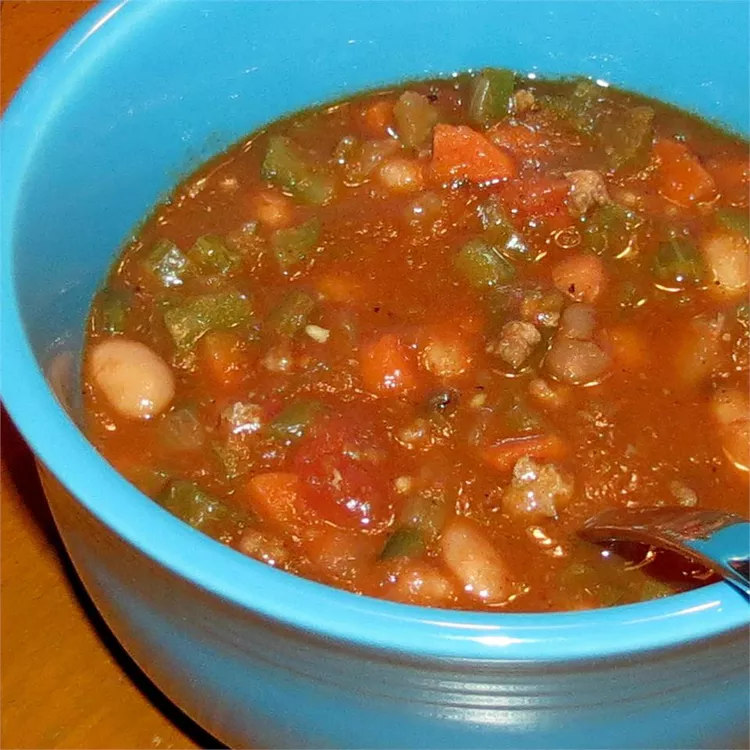

Arizona Roadhouse chili

Description
The best thick hearty chili recipe you'll ever need. In 25 years of restaurant cooking, this is my classic chili recipe; loved by thousands. Vary the amount of green chilies and hot sauce if you're an Easterner unused to fiery Western foods, but don't change anything else.
Inredients
- 1 pound dried pinto beans
- 1 pound 90%-lean ground beef
- 2 large sweet onions, diced
- 3 cups diced celery
Steps
- Place pinto beans in a large container and cover with several inches of cool water; let stand 8 hours to overnight.
- Cook and stir beef in a large stockpot over medium-high heat until crumbly, evenly browned, and no longer pink, 7 to 10 minutes. Drain and discard grease from pot.
- Drain pinto beans and add to stockpot; add onions, celery, carrots, garlic, red bell peppers, jalapeno peppers, Anaheim peppers, poblano peppers, diced tomatoes, guajillo chile powder, cumin, oregano, coriander, cinnamon, and hot pepper sauce. Reduce heat to medium-low and cook mixture at a simmer for about 3 hours.